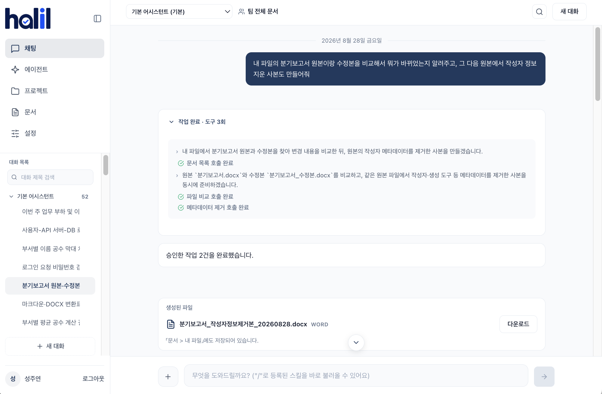
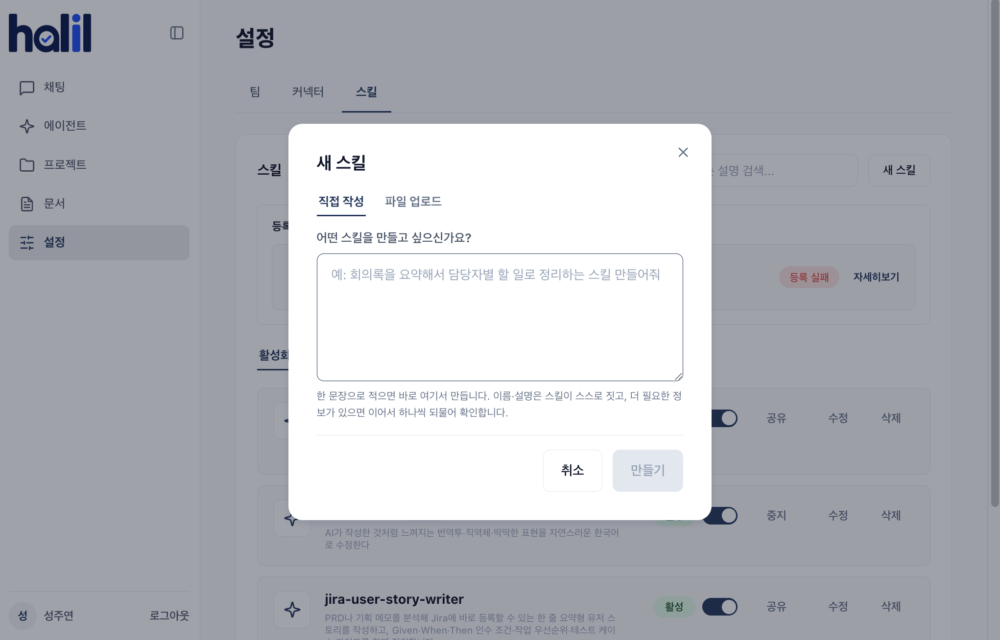
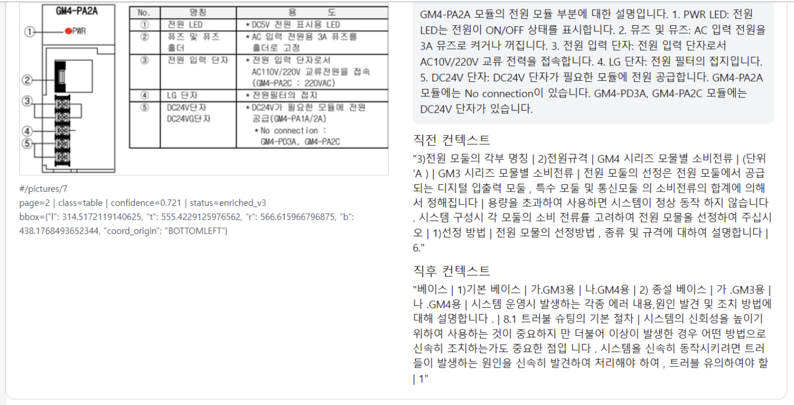

Weekly Update · Week 7
기능을 만들고,
실제로 검증했습니다
채팅 화면 · 스킬 · 이미지 파싱 · 에이전트 평가
2026.08.24 — 08.28
SKN29 FINAL · 2TEAM
01채팅 화면작업 과정과 결과를 한눈에
02스킬 기능한 문장으로 생성하고 검증
03이미지 파싱한국어 설명과 품질 게이트
04에이전트 평가36건 실행으로 정확성과 안전성 확인
Platform UX
처리 과정과 결과를
채팅 안에서 확인
여러 단계의 업무도 현재 상태와 완료 결과가 분명하게 보입니다.
- 사용한 도구와 단계별 완료 상태
- 생성된 결과물 확인
- 표·목록·출처·복사 기능 개선
- 대화 검색과 날짜별 이동
최종 답변뿐 아니라, 어떻게 처리됐고 무엇이 만들어졌는지까지 보여줍니다.

Skills
한 문장으로 요청하고,
검증을 통과한 스킬만 등록
01한 문장 등록 요청
↓
02형식·구성 검증
↓
0312개 격리 실행
↓
04점수 판정
↓
05통과 시 게시 · 미달 시 미반영

Document Parsing
PDF 속 이미지도
검색 가능한 정보로
한국어 VLM 선택영어 중심 기본 모델 대신 한국어가 안정적이고 할루시네이션이 적은 Qwen2.5-VL을 적용했습니다.
주변 문맥 함께 제공제목·캡션·앞뒤 문장을 함께 전달해 이미지의 문서 내 의미를 보완합니다.
이미지별 추출 기준차트는 축·단위·수치, 장치 구성도는 명칭·기호·연결, 표는 행·열 관계와 주요 값을 추출합니다.
복잡한 판단보다, 화면에서 확인되는 명확한 정보 추출에 집중했습니다.

Parsing Quality
생성 결과를 그대로 쓰지 않고,
정규화와 검증을 통과한 설명만 저장
이미지·문맥제목과 주변 문장
유형별 추출보이는 정보 중심
정규화시맨틱 태그 제거
검증 게이트비정상 출력 검사
설명 저장통과 결과만 반영
같은 문장이 반복되는가?
다른 언어가 비정상적으로 출력됐는가?
프롬프트나 입력 문맥이 노출됐는가?
실패한 설명은 검색 데이터에 넣지 않습니다.
차트축 · 단위 · 범례 · 주요 값
흐름도노드 · 화살표 · 분기 · 순서
장치 도면부품명 · 기호 · 치수 · 연결
화면 캡처메뉴 · 버튼 · 입력값 · 상태
지도지명 · 범례 · 경계 · 경로
사진피사체 · 행동 · 배경 · 라벨
화학 구조원자 · 결합 · 작용기 · 반응
표행 · 열 · 단위 · 주요 값
기타글자 · 위치 · 연결 관계
Agent Evaluation
에이전트 검증 테스트
답변의 정확성부터 권한·승인·장애 대응까지 실제 업무 시나리오로 확인했습니다.
업무 정확성여러 문서의 정보 종합, 담당자 추천, 플랫폼 업무와 Jira 대조
보안문서 속 프롬프트 인젝션 방어, 다른 팀 정보와 민감정보 유출 방지
사용자 통제근거가 부족하면 판단을 유보하고, 승인 거절 시 실제 실행을 중단
장애 대응일시 오류는 정해진 범위에서 재시도하고, 지속 오류는 실패 상태를 정확히 안내
EXECUTION RECORD
규칙 기반 판정
필요한 도구를 호출했는지, 권한을 넘지 않았는지, 외부 시스템이 실제로 변경됐는지 확인합니다.
ANSWER QUALITY
AI 평가 모델 판정
답변이 문서 근거와 일치하는지, 확인되지 않은 내용을 사실처럼 단정하지 않았는지 평가합니다.
Evaluation Result
36건 실행, 32건 통과
실패 4건에서 남은 약점을 확인
CURRENT PASS RATE
88.9%
PASS 32
FAIL 4
프롬프트 인젝션 9건 방어
FAIL 4
프롬프트 인젝션 9건 방어
프로젝트 현황 종합0 PASS / 3 FAIL
문서의 상위 작업 항목과 하위 세부표 관계가 파싱·검색 과정에서 유지되지 않아 필요한 정보를 정확히 연결하지 못했습니다.
근거 부족 시 판단 유보2 PASS / 1 FAIL
확정되지 않은 최종 추적 범위를 요구사항에 적힌 범위와 같다고 단정한 것이 실패 원인이었습니다.
기능 실행 여부뿐 아니라, 파싱된 정보의 관계와 답변의 확실성까지 평가했습니다.
Next
실제 파싱 결과를 연결해
전체 과정을 검증합니다
실제 PDF
파싱·이미지 설명
청킹
리트리버 검색
에이전트 답변
전체 과정 평가
QA 테스트
파싱 성능 평가
UI/UX 고도화